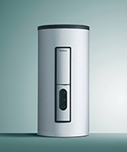
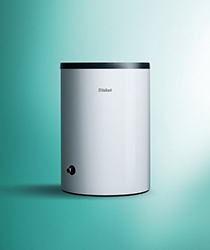
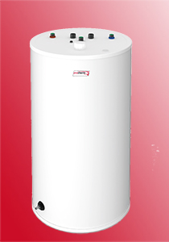
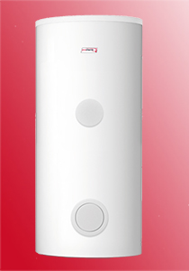

Электрические бойлеры и бойлеры косвенного нагрева

|
eloSTOR VEH 50/7 basisМощность: 1,8 кВт; Объём бака: 50 л; Номинальная температура: 10-75С; Габариты: 56,0/43,5/45,4 см; Установка: Вертикальная; Просмотреть основные характеристики от 10 600 рублей |
|
|
eloSTOR VEH 80/7 basisМощность: 1,8 кВт; Объём бака: 80 л; Номинальная температура: 10-75С; Габариты: 81,0/43,5/45,4 см; Установка: Вертикальная; Просмотреть основные характеристики от 11 700 рублей |
|
|
eloSTOR VEH 100/7 basisМощность: 1,8 кВт; Объём бака: 100 л; Номинальная температура: 10-75С; Габариты: 97,6/43,5/45,4 см; Установка: Вертикальная; Просмотреть основные характеристики от 12 700 рублей |
|  |
eloSTOR VEH exclusiv 200/5Мощность: 7,5 кВт; Объём бака: 200 л; Номинальная температура: 7-85С; Габариты: 126,5/66,0/66,0 см; Установка: Вертикальная; Просмотреть основные характеристики от 77 400 рублей |
eloSTOR VEH exclusiv 300/5Мощность: 7,5 кВт; Объём бака: 300 л; Номинальная температура: 7-85С; Габариты: 177,5/66,0/66,0 см; Установка: Вертикальная; Просмотреть основные характеристики от 87 000 рублей |
|
eloSTOR VEH exclusiv 400/5Мощность: 7,5 кВт; Объём бака: 400 л; Номинальная температура: 7-85С; Габариты: 147,5/81,0/81,0 см; Установка: Вертикальная; Просмотреть основные характеристики от 96 700 рублей |

|
actoSTOR VIH QL 75 BОбъём бака: 72 л; Максимальная температура нагрева: 85С; Дополнительное оборудование: Габариты: 740/440/440 мм; Установка: Настенная; Просмотреть основные характеристики от 35 300 рублей |

|
uniSTOR VIH Q 75 BОбъём бака: 68 л; Максимальная температура нагрева: 85С; Дополнительное оборудование: Габариты: 746/440/440 мм; Установка: Настенная; Просмотреть основные характеристики от 44 900 рублей |
|  |
uniSTOR VIH R 120/6 ВОбъём бака: 117 л; Максимальная температура нагрева: 85С; Дополнительное оборудование: Габариты: 853/590 мм; Установка: Напольная; Просмотреть основные характеристики от 41 300 рублей |
uniSTOR VIH R 150/6 ВОбъём бака: 144 л; Максимальная температура нагрева: 85С; Дополнительное оборудование: Габариты: 988/590 мм; Установка: Напольная; Просмотреть основные характеристики от 44 600 рублей |
|
uniSTOR VIH R 120/6 ВRОбъём бака: 117 л; Максимальная температура нагрева: 85С; Дополнительное оборудование: Габариты: 853/590 мм; Установка: Напольная; Просмотреть основные характеристики от 45 600 рублей |
|
uniSTOR VIH R 150/6 ВRОбъём бака: 117 л; Максимальная температура нагрева: 85С; Дополнительное оборудование: Габариты: 988/590 мм; Установка: Напольная; Просмотреть основные характеристики от 49 000 рублей |
|
uniSTOR VIH R 200/6 ВОбъём бака: 184 л; Максимальная температура нагрева: 85С; Дополнительное оборудование: Габариты: 1206/590 мм; Установка: Напольная; Просмотреть основные характеристики от 49 300 рублей |
|
uniSTOR VIH R 200/6 ВRОбъём бака: 184 л; Максимальная температура нагрева: 85С; Дополнительное оборудование: Габариты: 1195/550 мм; Установка: Напольная; Просмотреть основные характеристики от 54 300 рублей |
|
uniSTOR VIH R 400Объём бака: 404 л; Максимальная температура нагрева: 85С; Дополнительное оборудование: Габариты: 1470/650 мм; Установка: Напольная; Просмотреть основные характеристики от 98 400 рублей |
|  |
FE 120/6 BMОбъём бака: 117 л; Максимальная температура нагрева: 80С; Дополнительное оборудование: Габариты: 853/590 мм; Установка: Напольная; Просмотреть основные характеристики от 38 000 рублей |
FE 150/6 BMОбъём бака: 144 л; Максимальная температура нагрева: 80С; Дополнительное оборудование: Габариты: 988/590 мм; Установка: Напольная; Просмотреть основные характеристики от 41 100 рублей |
|
FE 200/6 BMОбъём бака: 184 л; Максимальная температура нагрева: 80С; Дополнительное оборудование: Габариты: 1206/590 мм; Установка: Напольная; Просмотреть основные характеристики от 45 300 рублей |
|

|
FS B 100 SОбъём бака: 95 л; Максимальная температура нагрева: 80С; Дополнительное оборудование: Габариты: 880/500/510 мм; Установка: Напольная; Просмотреть основные характеристики от 39 900 рублей |
|  |
FS B 300 SОбъём бака: 295 л; Максимальная температура нагрева: 85С; Дополнительное оборудование: Габариты: 1775/500 мм; Установка: Напольная; Просмотреть основные характеристики от 62 600 рублей |
FS B 400 SОбъём бака: 404 л; Максимальная температура нагрева: 85С; Дополнительное оборудование: Габариты: 1470/650 мм; Установка: Напольная; Просмотреть основные характеристики от 76 300 рублей |
|
FS B 500 SОбъём бака: 496 л; Максимальная температура нагрева: 85С; Дополнительное оборудование: Габариты: 1775/650 мм; Установка: Напольная; Просмотреть основные характеристики от 87 200 рублей |
|

|
WH B 60 ZОбъём бака: 58 л; Максимальная температура нагрева: 80С; Дополнительное оборудование: Габариты: 900/420/410 мм; Установка: Настенная/Напольная; Просмотреть основные характеристики от 37 300 рублей |